Regiões, relevo e água
Objetivo: tirar a cara de “mapa gerado com tileset” e deixar a superfície orgânica e explorável. O
planeta é árido e vazio, não areia: rocha, terra seca, sal, basalto e geada. Tudo aqui sai de script
(tools/sprites/regions_mockups.py), em pixels reais 960×540 com a HUD B2 por cima. Nada disso está
no jogo ainda: é pra tu aprovar antes do código.
- Fumarolas ativas no basalto: cone baixo, par de cones e chaminé, cada uma dormente × ativa (brasa leve e
crosta de enxofre), a rampa nova
VENT, a fumaça como partícula (com os números), a cena dormente × ativa com GIF e a regra de onde nascem e de quando acordam com o calor. Seção v9.1. - A v9 foi aprovada e promovida pra
assets/sprites/regions/(os 70 PNGs, o basalto novo e os dados noregions_palettes.json).
- Basalto sem o retângulo: a célula quase retangular do
ground_basalt.png(e mais 3 parecidas) quebrada empurrando só 4 sítios do Voronoi. Continua emendando e com a mesma cara. Antes × depois e ladrilhado 3×3 na seção v9. - Mais elementos por região: 10 decalques novos, 10 soltos com altura novos (3 variações cada), musgo Verde+ em 2 deles e 4 formações pequenas, com cenas antes × depois no Árido e no Verde e a densidade sugerida.
- A v8.3 continua aprovada e intacta logo abaixo.
- Pedra de topo do hoodoo de volta à forma e à paleta da v8.1 (o dono preferiu ela à laje cinza da v8.2). Mudou só o que incomodava: saiu o salpicado de pixels cinza e claros. Agora a superfície é limpa, em faixas chapadas de luz, na mesma família marrom do fuste (um tom mais escura, de rocha mais dura): topo mais claro, lateral mais escura, e a aba sombreando o fuste. Sem trinca atravessando. Antes (v8.1) × depois (v8.3) na seção 4.
- A rampa
CAPROCKsaiu: oform_monolith.pngusa só a rampaSAND, como os outros marcos do planalto. Promovido direto praassets/sprites/regions/.
- Pedra de topo como laje cinza facetada: o dono achou que parecia uma rocha caída em cima. Promoção dos
aprovados pra
assets/sprites/regions/e contrato proposto na bíblia (§6).
- Formações refeitas como rocha natural (seção 4, com antes × depois): o arco virou arco de erosão assimétrico e esburacado; o monolito virou hoodoo com pedra de topo; os pináculos viraram basalto colunar hexagonal em degraus com colunas caídas; a crosta de sal, o cone e o gelo-portão também foram refeitos sem geometria de construção.
- Por baixo: cada formação agora é um volume 3D renderizado em pixel art (
regions_volume.py), não polígono 2D. - Cratera de impacto nova: borda elevada irregular, blocos e manto de ejeção, bacia rebaixada, rampa entalhada descendo até o buraco no fundo. O gelo é uma tampa que baixa em 5 etapas como lago secando, com marcas de geada nas paredes.
- Pegadas de colisão revistas: o cone agora bloqueia 3×2 (o pé baixo é andável); a cratera continua 3×3. O resto não mudou.
- Regiões, paletas, estágios por cor, decalques, morros e água: aprovados, sem mudança.
- 3 regiões + faixa gelada com paleta base própria, chão de textura grande (sem repetir tile) e borda entre regiões deformada (curva irregular, nunca linha de tile).
- 4 estágios por variação de cor: 1 rampa de 8 cores por região, e a Tempestade, a Névoa e o Verde saem de uma conta fixa em cima dela. São 5 conjuntos de chão (com o leito seco), e não 12 desenhados à mão.
- 6 formações fixas e a tampa da cratera (refeitas na v8.1).
- Decoração que quebra a grade: manchas, rachaduras longas, placas, cascalho, sulcos de vento, entulho no pé dos morros, e coisas soltas com altura por região.
- Morros com borda orgânica (grade dual: a escada vira curva, a colisão continua a do tile).
- Relevo e água: bacias com leito seco e marca d'água (L1, L2, L3) que enchem na Névoa e no Verde; o salar vira o grande lago.
- Sem ossada nenhuma, como pedido.
v9.1 · Fumarolas ativas que acordam com o calor (PROPOSTA)
Ideia do dono: conforme o índice de calor sobe no Marco 3 (o mesmo que derrete a cratera), as
fumarolas do basalto acordam e soltam fumaça. Do esboço (reports/design/refs/fumarolas_esboco_dono.png)
aproveitei só as 3 formas: cone baixo e largo com boca, par de cones e chaminé alta e fina com veios escorrendo, todas
com a boca aberta no topo. O desenho é original, feito no mesmo motor de volume do cone de escória e do basalto
colunar, com a rampa HILL do basalto. Nada disso está em assets/: os PNGs indexados ficam em
reports/design/regioes/v91/pendentes/, com o regions_v91.json. O decalque fumarole da v9
continua sendo o respiro apagado de chão.
As 3 fumarolas · dormente × ativa
Dormente: boca escura e fria, veios de óxido. Ativa: brilho de brasa leve no fundo da boca, crosta de enxofre em manchas na borda e veios amarelados escorrendo. O resto do sprite é igual, então a troca não pula.
| fumarola | sprite (3×) | pegada | fumaça |
|---|---|---|---|
Fumarola · cone baixoform_vent_cone_{dormant,active}.png60×48 · rampa HILL+VENT âncora (30, 38) = centro de baixo da pegada bloqueia 1 tile boca (fumaça): (30, 24) 2.5 puffs/s por boca |
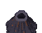 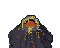 |
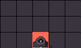 |
|
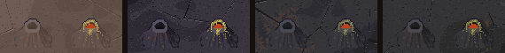 | |||
Fumarola · par de conesform_vent_pair_{dormant,active}.png72×64 · rampa HILL+VENT âncora (36, 52) = centro de baixo da pegada bloqueia 2×1 bocas (fumaça): (26, 21), (48, 39) 2.0 puffs/s por boca |
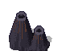 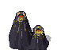 |
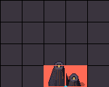 |
|
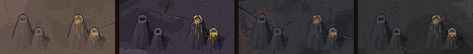 | |||
Fumarola · chaminéform_vent_chimney_{dormant,active}.png40×78 · rampa HILL+VENT âncora (20, 68) = centro de baixo da pegada bloqueia 1 tile boca (fumaça): (20, 19) 3.5 puffs/s por boca |
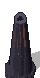 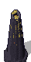 |
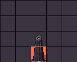 |
|
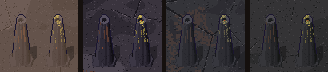 | |||
Paleta · rampa nova VENT (índices 10..13)
- 10, 11 · enxofre (escuro, claro): é mineral, então segue o estágio como o resto (a mesma conta do
stage_colordo basalto). Na Tempestade fica empoeirado; na Névoa, apagado; no Verde, mais oliva. - 12, 13 · brasa (escura, clara): emite luz, então é fixa nos 4 estágios, como as cores de LED das máquinas. É pequena (só o fundo da boca) pra ficar “leve”.
- 0..9 é a rampa
HILLdo basalto, igual às formações: o dormente nem usa aVENT.
| estágio | 10 · 11 · 12 · 13 |
|---|---|
| Tempestade | |
| Árido | |
| Névoa | |
| Verde |
Fumaça (partícula do jogo, não sprite)
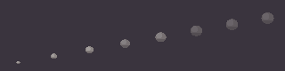
- Taxa: 2.5 puffs/s por boca no cone, 2.0 em cada boca do par,
3.5 na chaminé. Nasce na
mouthsdo JSON (px do sprite) ± 1 px. - Vida: 2.6–3.4 s. Subida: 16–22 px/s na saída, freando até ~35% no fim.
- Tamanho: raio 1.5–2.5 px ao nascer, abre até 7–10 px (rápido no começo, devagar no fim). Disco levemente achatado (y × 1,1).
- Vento: o puff anda com 45% do vento da superfície (o mesmo da poeira), mais uma tremida lateral de ± 3 px num seno lento. Na Tempestade a coluna deita.
- Cor: 3 tons chapados, sem gradiente: miolo
#e9e4dc(de cima-esquerda, onde bate a luz), corpo#c4bdb4, borda de baixo#958e88. Na Tempestade e na Névoa os tons puxam 40% pra#c9a37ee#aab3bb. - Alfa em degraus (pixel art, nada de fade contínuo): 150 até 35% da vida, 110 até 70%, 70 no fim. O puff novo vai por cima do velho.
- Desenhada depois dos objetos (por cima da fumarola e do player), antes da HUD. No máximo ~12 puffs vivos por boca.
Na cena do basalto · dormente × ativa
Mesma vista do basalto da v9 aprovada, com um campo de 3 fumarolas perto do cone de escória.
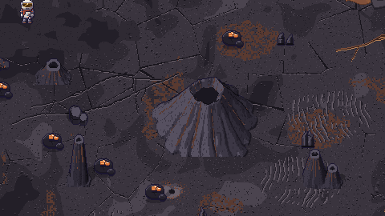
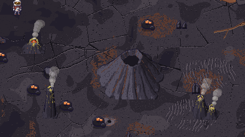
v91/vents_active.gif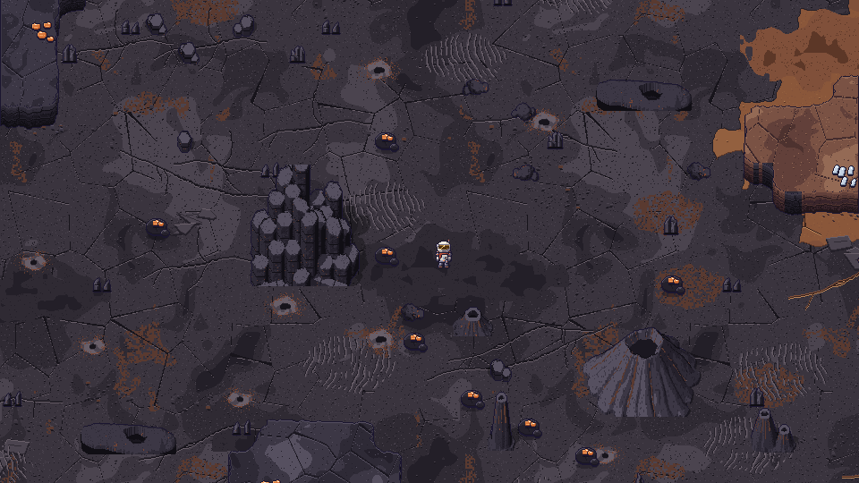
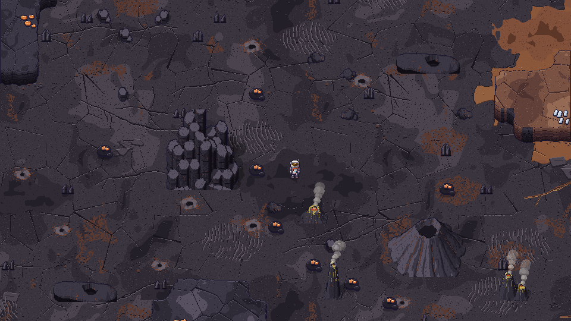
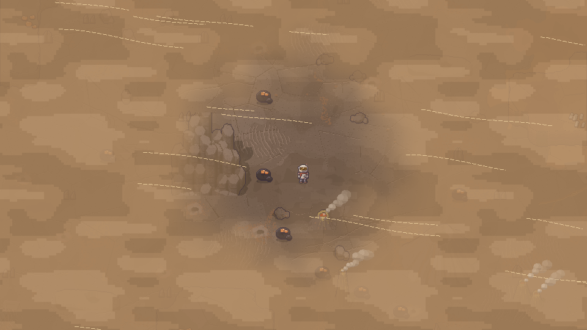
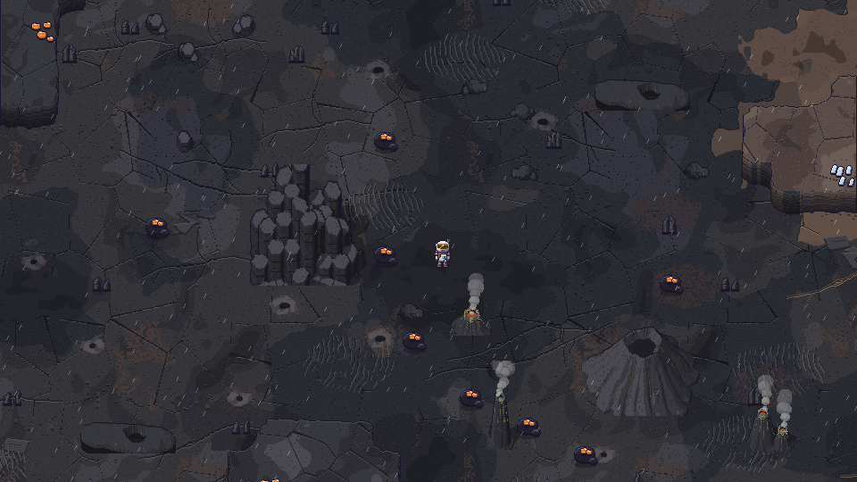
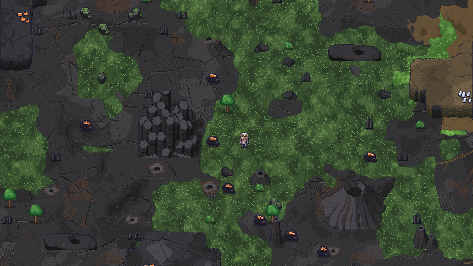
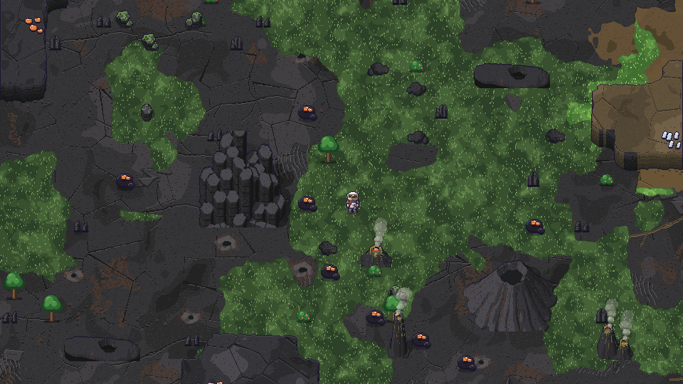
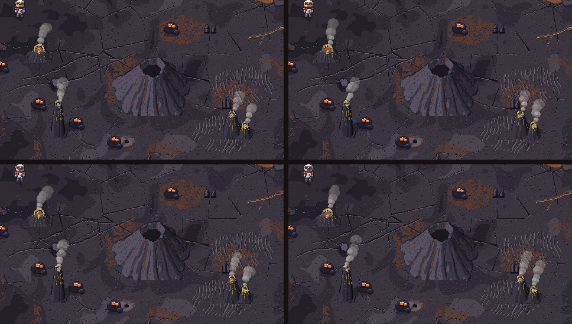
Onde nascem, quantas e quando acordam
- Quantas: 5–8 no basalto (cone 2–3, par 1–2, chaminé 1–2).
- Onde: inteira no basalto com 2 tiles de folga na mesma região, fora de bacia, a 26+ tiles da base, a 8+ tiles uma da outra e 6+ das formações grandes; de preferência em grupo (campo de fumarolas): 60% sorteadas num raio de 10–30 tiles do cone de escória, o resto livre no basalto. Não nascem no bolsão nem no avental dos gelos-portão.
- Quando acordam: cada fumarola sorteia um limiar de calor entre o calor da etapa 1 e o da etapa 4 da tampa da cratera (o mesmo índice de calor do Marco 3): abaixo, dormente; acima, ativa. Assim elas acordam aos poucos enquanto o gelo da cratera derrete. Na troca, 1 s de transição: a fumaça começa com 1/3 da taxa e sobe; o sprite troca na hora (o brilho é leve).
- Colisão e desenho: igual às formações (tile
FORMATIONna pegada, âncora no centro de baixo da pegada, ordem pelo pé, não minera, sombra no sprite). O sprite troca de_dormantpra_activepelo estado; a paleta éHILLdo basalto (0..9) +VENTdo estágio (10..13), no estágio do tile do pé. - Mapa: entram como “Formação” (pictograma de pico) só se o dono quiser; por padrão não marcam.
Se o dono aprovar · contrato (bíblia §6)
- Linha nova:
form_vent_{cone,pair,chimney}_{dormant,active}.png· 60×48, 72×64 e 40×78 · fumarolas do basalto, bloqueiam 1, 2×1 e 1 tile · paleta 0..9HILLdo basalto + 10..13VENT·mouthsno JSON. - Rampa nova
VENTnoregions_palettes.json(por estágio, 4 cores) e o blocosmokecom os números da partícula.
v9 · Mais elementos nas regiões + basalto sem retângulo (aprovado)
Aprovado pelo dono e promovido: os PNGs estão em assets/sprites/regions/ e os dados no
regions_palettes.json (formações pequenas em formations, rampa MOSS em ramps,
densidade em v9_density). A cópia em reports/design/regioes/v9/pendentes/ fica de registro (mesmo
formato: modo P, 0..7 rampa, 8 contorno, 9 sombra, 255 transparente). São 30 decalques, 30 soltos com altura, 6 overlays de musgo
(Verde+) e 4 formações pequenas, mais a candidata do ground_basalt.png.
Tudo natural, nada de construção, nada biológico (sem ossada); o musgo é o mesmo da cobertura do Verde que já existe.
1 · Basalto: a célula retangular
A fratura do basalto é um Voronoi de 9×9 sítios. O sítio (1, 4) caiu alinhado na horizontal e na
vertical com os 4 vizinhos, e as 4 bissetrizes viraram um retângulo (x 64–133, y 215–290). Um detector de células
“quadradas” (quanto da borda fica a menos de 9° de horizontal/vertical) achou mais 3 parecidas, menos visíveis. Os
4 sítios foram empurrados 0,3 célula na diagonal (BASALT_NUDGE em regions_core.py), e
nada mais mudou: são 1421 px de 262.144 (0,5%). A emenda continua: o Voronoi é periódico e o
empurrão vale pro sítio em qualquer volta (fração de pixel diferente na emenda 0.187 contra
0.153 entre colunas vizinhas no miolo, igual à v8.3).
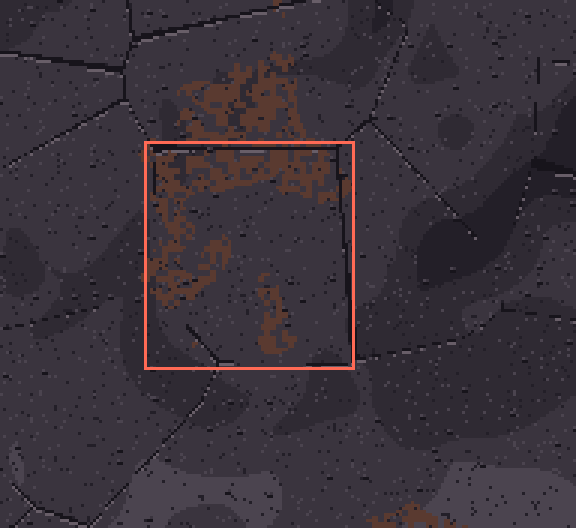
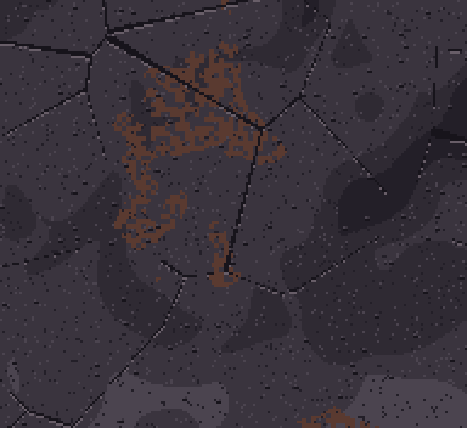
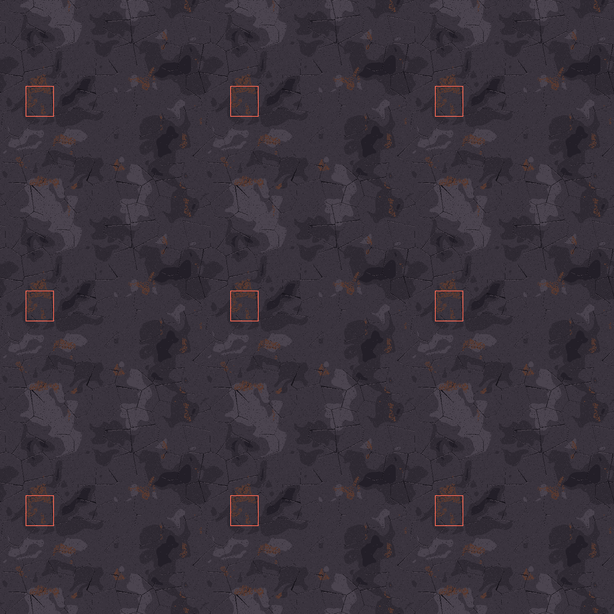
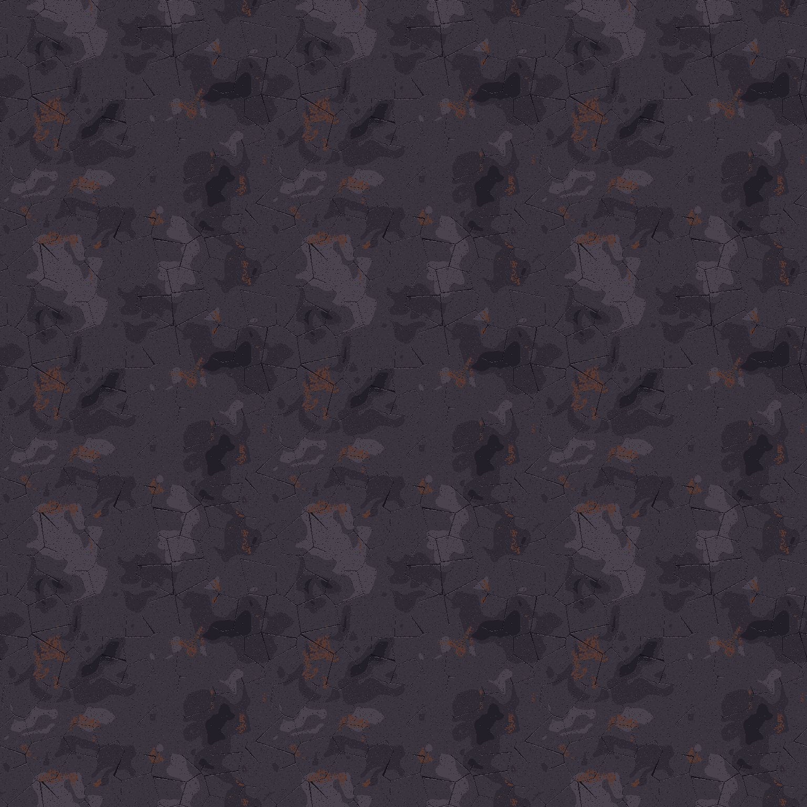
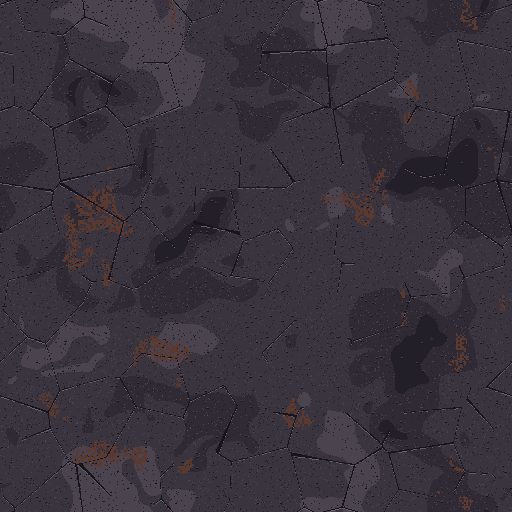
ANTESDEPOIS- Promovido:
BASALT_FIX = Truenoregions_core.py; oassets/sprites/regions/ground_basalt.pngé igual à candidata (v9/ground_basalt.png). Os 1.421 px que mudaram ficam todos nas 4 células empurradas (mais 3 px de borda), conferido. - Com
BASALT_FIX = Falseo script gera byte a byte a textura da v8.3 (é o “antes” do report).
2 · Catálogo dos elementos novos
Cada região ganhou decalques de chão (não colidem) e pelo menos 2 tipos de solto com altura (não
colidem, ordenados pelo pé, até 32×28), com 3 variações cada. Os soltos são volumes 3D no mesmo renderizador
das formações (luz em faixas, sombra própria e no chão em alfa fixo, contorno #1b1630), menos as lajes e
as lascas de lama, que são desenho 2D. A tira de cada um mostra os 4 estágios só trocando a rampa.
Ficaram de fora (testei e não passaram): o geodo (em 20 px o miolo claro dentro da casca lia como
comida ou como rosto) e a pedra equilibrada (lia como cogumelo, e o hoodoo já ocupa essa ideia); no lugar
entraram as lajes lascadas e a pedra rachada.
Planalto
Veio mineral exposto
faixa clara de mineral mais duro, em relevo, que serpenteia e some na terra
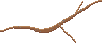
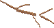
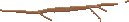
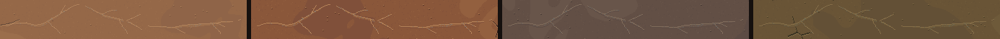
Anéis de oxidação
faixas concêntricas e tortas de ferrugem e ocre, abertas de um lado
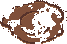
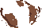
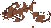
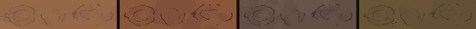
Seixos
2 a 4 pedrinhas roladas (também no leito seco)
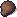
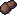
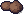
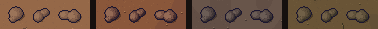
Pedra média
pedra achatada roída pelo vento, com uma face de lasca
VERDE+ganha musgo no Verde
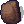
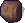
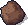
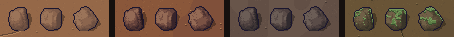
Lajes lascadas
placas chatas e angulosas de rocha que esfoliou, uma sobre a outra
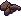
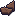
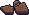
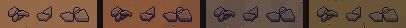
Leito seco
Rastro de seixo
sulco comprido de pedra que o vento arrastou no lodo, e o seixo no fim
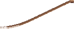
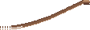
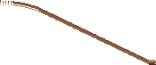
Marcas de onda
cristas paralelas do lago antigo fossilizadas no silte
Lascas de lama
plaquinhas de lodo seco com a borda de trás enrolando
Salar
Polígonos de sal miúdos
favo torto de cristas de sal empurradas (~14 px)
Eflorescência
rosetas de sal em grupinho
Montinho de sal
sal em couve-flor (eflorescência que cresceu)
Crosta solta
lascas finas de crosta de sal soltas e encavaladas
Basalto
Respiro de fumarola apagada
boca escura, crosta mineral clara, halo de óxido
Lava em corda
frente de um lóbulo de lava lisa com as dobras em arco
Bombas vulcânicas
pedras porosas de escória, uma em fuso, com vesículas e óxido
Toco de coluna
1 a 3 prismas hexagonais curtos, quina quebrada, junta
VERDE+ganha musgo no Verde
Faixa gelada
Solo poligonal
polígonos de permafrost com cunha de gelo no sulco
Geada em pena
galhos de cristal de gelo se ramificando
Penitentes
lâminas de gelo afiadas pela sublimação, inclinadas pro sol
Pedra com geada
rocha escura com a crosta de geada por cima
Verde+ · musgo nas pedras
Só no Verde. A pedra média do planalto e o toco de coluna do basalto ganham um overlay
decor_{boulder,column_stub}_moss_{0..2}.png (mesmo tamanho da pedra, desenhado por cima, índices 0..3
na rampa fixa MOSS: #22331f, #38502e, #5c7d45, #75985a, a família do musgo da cobertura).
Nos outros estágios a pedra aparece limpa.
Formações pequenas (opcionais)
Menores que as de hoje, mesmo esquema: volume 3D, ancoradas no centro da base, ordenadas pelo pé,
bloqueiam só os tiles do pé (tile FORMATION), não mineram. Não viram marcador “Formação” no mapa
(são miúdas); se o dono quiser, entram com o mesmo pictograma.
| formação | sprite (2×) | pegada | 4 estágios |
|---|---|---|---|
| Pedra rachada planalto form_split_rock.png72×64 · rampa HILL âncora (36, 52) · bloqueia 1 tile 4–6 no planalto |
|||
| Pilares de sal salar form_salt_pillar.png68×60 · rampa BASE âncora (34, 52) · bloqueia 1 tile 3–4 no salar |
|||
| Tubo de lava colapsado basalto form_lava_tube.png124×56 · rampa HILL âncora (62, 40) · bloqueia 3 tiles 2–4 no basalto |
|||
| Agulhas de gelo faixa gelada form_ice_needles.png84×72 · rampa ICE âncora (42, 62) · bloqueia 3 tiles 3–5 na faixa gelada |
3 · As regiões antes × depois
Mesma vista, mesmo mundo de exemplo da v8 (sem HUD, pra ver o chão). O “depois” só acrescenta: os decalques novos num 3º sorteio por célula de 96 px, os soltos novos por tile e 1 ou 2 formações pequenas por vista. No Verde as bacias estão cheias (L3), então o leito seco some debaixo d'água, como vai ser no jogo.
Planalto (com a depressão de leito seco) · Árido
Planalto (com a depressão de leito seco) · Verde
Salar · Árido
Salar · Verde
Basalto · Árido
Basalto · Verde
Faixa gelada · Árido
Faixa gelada · Verde
Os outros 2 estágios (planalto, depois)
4 · Densidade sugerida
| região | decalques v9 (3º sorteio na célula de 96 px: chance · pesos) | soltos v9 (chance por tile de chão livre) | soltos da v8 (continuam) | formações pequenas por mundo |
|---|---|---|---|---|
| planalto | 30% · vein 3, oxide 2 | pebbles 1.2%, boulder 0.6%, slabs 0.8% · total 2.6% | nenhuma | split_rock 4–6 |
| leito seco | 35% · trail 2, ripples 3 | mud_curls 2.0%, pebbles 0.6% · total 2.6% | nenhuma | nenhuma (alaga no M3) |
| salar | 30% · saltpoly 3, efflor 3 | salt_mound 1.0%, salt_slabs 1.2% · total 2.2% | salt_crystals 3,5% | salt_pillar 3–4 |
| basalto | 30% · fumarole 3, ropy 2 | bombs 1.2%, column_stub 0.8% · total 2.0% | shards 3,5% | lava_tube 2–4 |
| faixa gelada | 30% · icepoly 3, rime 3 | penitentes 1.2%, rimed_rock 1.0% · total 2.2% | ice_chunks 3,5% | ice_needles 3–5 |
Os números são de partida, ajustáveis no game/config.py
(na mesma linha do GROUND_*). Ficam todos em v9/pendentes/regions_v9.json
(decal_p_v9, decal_mix_v9, decor_p_v9, small_formations).
Pro Dev integrar (v9)
- Basalto: trocar o
ground_basalt.pngpela candidata. Mesmo tamanho, mesma paleta, mesma regra de recorte; nada muda no código. - Decalques (
decal_*.pngnovos, rampaBASEda região onde caem, leito seco =bed): na mesma grade de 96 px presa no mundo, um 3º sorteio por célula, com hash próprio, posição própria e só a lista da v9 da região (decal_mix_v9) com a chancedecal_p_v9. Espelhar na horizontal com 50%. Mesmas exclusões de hoje (raio de 6 tiles da base, volta das formações). Entram na camada do chão, antes da água e da cobertura (a água e a grama tapam). - Soltos (
decor_*.pngnovos): como os de hoje. Âncora no centro da base, pé em(tx·32 + 16 ± 7, ty·32 + 26..29), ordenados pelo pé, espelho horizontal com 50%, não colidem. 1 sorteio por tile de chão livre (decor_p_v9, as chances somam); some onde tem máquina, veio, destroço, rocha, parede, formação e no tile com o solto da v8; nada abaixo do nível d'água atual. Rampa pela tabela do arquivo (files[...].rampno JSON): seixos, pedra média, lajes, bombas, toco e pedra com geada =HILLda região (seixo no leito seco usa oHILLdo planalto); montinho de sal, crosta solta e lascas de lama =BASE; penitentes =ICE. - Verde+: no estágio Verde, desenhar
decor_X_moss_N.pnglogo depois dedecor_X_N.png, no mesmo lugar e com o mesmo espelho. Paleta fixaMOSS(índices 0..3; 8 = contorno). Na mancha da transição, segue o estágio do tile do pé. - Formações pequenas (
form_split_rock,form_salt_pillar,form_lava_tube,form_ice_needles): igual às formações de hoje (hills.FormationSprites): âncora do JSON nobase_px, ordem pelo pé, pegada viraFORMATION, sombra já vem no sprite (índice 9). Rampa: pedra rachada e tubo de lava =HILL; pilar de sal =BASEdo salar; agulhas =ICE. Geração: inteira na região, fora de bacia, 2 tiles de folga, a 10+ tiles uma da outra e das grandes, a 20+ da base; sem afloramento em volta (são miúdas). - Ordem de desenho não muda: chão → decalques (v8 + v9) → água/cobertura → por linha: morros, objetos pelo pé (soltos, formações, player, máquinas) → efeitos do estágio.
Contrato · aprovado, já na bíblia §6
decal_*.png: a tabela já cobre (“variados”, rampa BASE). Entram os nomes novos:decal_{vein,oxide,saltpoly,efflor,fumarole,ropy,icepoly,rime,trail,ripples}_{0..2}.png.decor_*: a linha viradecor_{shards,salt_crystals,ice_chunks,pebbles,boulder,slabs,salt_mound,salt_slabs, bombs,column_stub,penitentes,rimed_rock,mud_curls}_{0..2}.png, “até 32×28” (hoje diz 28×24; os novos vão até 31×26), com a rampa de cada um no JSON.- Linha nova:
decor_{boulder,column_stub}_moss_{0..2}.png· mesmo tamanho da pedra · overlay só no Verde, rampa fixaMOSS(nova noregions_palettes.json, como aMETAL). form_*: entramform_{split_rock,salt_pillar,lava_tube,ice_needles}.png(até 124×56), com a pegada: pedra rachada 1, pilar de sal 1, tubo de lava 3×1, agulhas de gelo 3×1.ground_basalt.png: sem mudança de contrato (mesmo arquivo, mesmo tamanho).
O que aproveitei de referência
Nenhuma imagem de fora: só a geologia de verdade de desertos e lugares frios, desenhada do zero no estilo aprovado. Salar: polígonos de sal e eflorescência dos lagos salgados secos. Basalto: lava em corda (pahoehoe), tubos de lava com claraboia e bombas vulcânicas. Faixa gelada: penitentes e solo poligonal de permafrost. Leito seco: rastro de pedra arrastada no lodo e marca de onda fossilizada. Planalto: veio de quartzo exposto e anéis de oxidação.
Resumo · recomendação e custo
| item | recomendação | arte (Designer) | Dev |
|---|---|---|---|
| 1 · Regiões | As 3 + faixa gelada como estão; planalto no centro, salar a leste, basalto a oeste/sudoeste, gelo no norte (mapa abaixo). | pronto · ajuste fino de cor depois do playtest (~0,5 dia) | médio: mapa de região no gerador + chão por região |
| 2 · Bordas orgânicas | Deslocamento de domínio de ±14 px (borda curva) + 1 px de fenda na divisa. | pronto | médio (ver “Pro Dev”: fácil com numpy) |
| 3 · Estágios por cor | Sim: PNG indexado + rampa por estágio. Grama, umidade e água vêm por cima, como camadas. | pronto | baixo (troca de paleta no load) |
| 4 · Formações | Entram as 6 (refeitas na v8.1); o gelo-portão em 3 etapas e a cratera em 5 são o Marco 3. | pronto · polir 1 ou 2 depois de ver no jogo (~1 dia) | baixo: objeto com pegada de colisão (igual ao destroço) |
| 5 · Decoração | Entra primeiro (o maior ganho pelo menor custo, como a spec já previa). | pronto (36 decalques + 9 soltos) | baixo |
| 6 · Morros | Grade dual (marching squares) + face por extrusão. | pronto (topo e face indexados) | médio |
| 7 · Relevo e água | Altura por noise, bacias marcadas, 3 níveis. A marca d'água seca mostra onde vai alagar. | pronto | médio/alto (é o Marco 3) |
1 · As regiões
Como o mapa se organiza
- Planalto rachado em volta da base (raio ~45 tiles): o começo calmo, com morros e 3 depressões pequenas.
- Salar a leste: a maior depressão (elipse de ~62×50 tiles), sem morro nenhum.
- Basalto a oeste e sudoeste, um pouco mais alto, com mais morros e mais ferro.
- Faixa gelada na borda norte (~24 tiles), com os gelos-portão fechando corredores entre morros. O contêiner lacrado fica atrás deles.
- A cratera nasce coberta de gelo (tampa em 3 etapas).
- O que o dono mandou de referência (
tempestade/referencia_dono.png), aproveitado só como estilo: chão aparecendo em graus diferentes (manchas grandes de tom, baixo contraste), sulcos de vento longos e finos e nada de duna. Não copiei nenhum desenho.
Planalto rachado
em volta da base · o “normal” do planeta
PALETA BASE (ÁRIDO)Chão: Terra e rocha seca ocre-ferrugem (sai do vermelho de hoje e puxa pro ocre da referência). Textura grande de 512 px com manchas suaves de baixo contraste, pedrisco e poucas fendas.
Formações grandes:
- Hoodoo (fuste de arenito com pedra de topo, 1 tile de pé)
- Arco natural (5 tiles, vão de 3 por onde se passa)
- Morros mineráveis com borda orgânica (ferro e silício)
- Depressões pequenas com leito seco e marca d'água
Decoração solta:
- Manchas grandes escuras e claras (3 a 7 tiles)
- Rachaduras longas com galhos (4 a 7 tiles)
- Placas soltas levantadas
- Cascalho
- Sulcos de vento (leste, 8° descendo, igual ao vento da tempestade)
Salar
leito de lago seco · a maior depressão · vira o grande lago no Marco 3
PALETA BASE (ÁRIDO)Chão: Crosta de sal creme, um tico rosada (não é branco de neve: fica na família do planeta e não briga com o traje branco). Polígonos de ~50 px com crista clara e sombra embaixo, rede fina por dentro.
Formações grandes:
- Crosta de sal elevada (placas grossas empurradas, 5×1 tiles, baixa)
- Sem morros: é plano de propósito, pra ler como fundo de lago
- Anéis de marca d'água (L1, L2, L3) em anel escuro
Decoração solta:
- Cristinhas de sal
- Manchas de crosta úmida (mais escura)
- Rachaduras
- Cristais de sal soltos (com altura, não colidem)
Basalto
escuro, rochas pontudas · no futuro vira vulcão
PALETA BASE (ÁRIDO)Chão: Rocha escura fria com fraturas retas e angulosas, escória e manchas de óxido apagadas (nada de laranja vivo: o vulcão é só gancho, por enquanto está extinto).
Formações grandes:
- Basalto colunar (prismas hexagonais em degraus, 3×2 tiles)
- Cone de escória (cratera no topo: o gancho do vulcão, 3×2 tiles)
- Morros escuros com mais ferro
Decoração solta:
- Escória (cascalho escuro)
- Manchas de óxido pintadas
- Rachaduras
- Lascas pontudas soltas (com altura, não colidem)
Faixa gelada
borda norte · onde ficam os gelos-portão
PALETA BASE (ÁRIDO)Chão: Geada por cima da rocha: azul-acinzentado com manchas claras e brilhos de gelo. Na Névoa a geada some e aparece rocha molhada; no Verde vira tundra com musgo.
Formações grandes:
- Gelos-portão (bloco de gelo gigante com rocha presa dentro, 4×2 tiles) fechando corredores entre morros
- Morros gelados com muito gelo
- Atrás do portão: destroço melhor + contêiner lacrado (Marco 3)
Decoração solta:
- Lâminas de gelo liso com reflexo
- Sulcos de geada
- Pedaços de gelo soltos (com altura, não colidem)
2 · As regiões no Árido (960×540, HUD B2)

Passagem de uma região pra outra
A região de cada pixel é a do tile em (x + dx, y + dy), com dx e dy vindos de um ruído preso no mundo (até ±14 px). A divisa vira curva irregular; 1 px de fenda escura marca o encontro.
3 · Os 4 estágios numa região (planalto)
“Paleta base + variação”
- Cada região tem 1 rampa de 8 cores (fenda, sombra, escuro, base, claro, brilho, 2 acentos). Os sprites são PNG indexado: o índice é o desenho, a rampa é a cor.
- Tempestade: puxa 30% pro ocre da poeira e achata o contraste (a poeira assentou) + a camada de poeira que já está no jogo.
- Árido: a rampa base.
- Névoa: 45% menos saturação, 16% mais escuro, véu cinza-azulado; na faixa gelada a geada vira rocha molhada. Por cima: manchas de umidade, chuva e as bacias enchendo.
- Verde: terra com matéria orgânica (mistura de verde-oliva, mais forte no planalto e na faixa gelada, fraca no salar). Por cima: grama/musgo como camada com borda deformada (musgo no basalto), que prefere a beira d'água, e as plantas de hoje.
- Resultado: 5 conjuntos de chão (4 regiões + o leito seco) × 1 desenho cada.
As rampas (região × estágio)
| região | Tempestade | Árido | Névoa | Verde |
|---|---|---|---|---|
| planalto | ||||
| salar | ||||
| basalto | ||||
| gelada | ||||
| leito seco |
4 · Formações fixas (marcos, não mineráveis) · refeitas na v8.1
Na v8.0 elas eram desenhadas como polígonos e faixas 2D, e por isso viravam “construção” (ponte,
torre, bambu). Agora cada uma é um volume 3D (densidade com ruído de erosão) renderizado na projeção do jogo
(o pixel (x, y) vê o ponto mais alto com x = X e y = Y − Z), com luz em 5 faixas chapadas, sombra própria e
projetada (alfa fixo), linha escura onde uma parte passa na frente da outra e contorno #1b1630.
Continua sendo pixel art chapado, só que a FORMA é de rocha. Sprite ancorado no centro da base, ordenado pelo pé;
bloqueia só os tiles do pé (vermelho na grade).
| formação | antes (2×) | depois (2×) | pegada (vermelho = bloqueia, ponto = âncora) |
|---|---|---|---|
| Hoodoo (monolito) planalto fuste de arenito que afina e engorda; v8.3: a pedra de topo da v8.1 (mesma forma), na família marrom do fuste, só que limpa: sem salpicado, em faixas chapadas de luz (topo mais claro, lateral mais escura), com a aba sombreando o fuste |
80×140 px · bloqueia 1 tile | ||
| Arco natural planalto erosão tipo Delicate Arch: perna esquerda maciça, direita fina com cintura, vão torto, buracos, ressaltos de estrato; só as pernas bloqueiam |

|
208×150 px · bloqueia 2 tiles | |
| Basalto colunar basalto prismas hexagonais em patamares (Calçada dos Gigantes), topos claros em degrau, alguns quebrados em diagonal, colunas caídas em gomos, juntas transversais |

|
156×136 px · bloqueia 6 tiles | |
| Cone de escória basalto relevo baixo com cratera no topo e sulcos de erosão; o pé some no chão (sem contorno embaixo); óxido apagado |
152×112 px · bloqueia 6 tiles | ||
| Crosta de sal elevada salar placas de sal empurradas e quebradas, cada uma no seu eixo, encavaladas; baixa, não esconde ninguém |
204×96 px · bloqueia 5 tiles | ||
| Gelo-portão faixa gelada bloco poliédrico de gelo glacial translúcido (a rocha presa aparece por dentro); encolhe em 3 etapas e amolece as quinas |
144×132 px · bloqueia 8 tiles |
Cratera de impacto (refeita)
Como ficou
- Borda elevada irregular (crista 9 px acima do chão, contorno torto), com blocos ejetados na borda e
fora dela, e um decalque de chão (
crater_ejecta.png) com o manto de ejeção e pedrisco que rareia pra fora. - Bacia rebaixada (19 px abaixo do chão no fundo), parede de dentro mais escura, sombra própria do lado oposto à luz.
- Rampa integrada: um entalhe na borda sul (de frente pra câmera) descendo em degraus de metal (a família
da
crater_rampde hoje, com os postes laranja na entrada) até o buraco no fundo da bacia, a boca da caverna. - O gelo é uma tampa que enche a bacia e baixa como lago secando: o nível cai, ficam marcas de geada nas paredes nos níveis por onde passou, e no fim a cratera fica vazia com o buraco e a rampa expostos.
crater_impact_0..4.pngGelo-portão derretendo
Soltos com altura (não colidem, não mineram)
5 · Decoração que quebra a grade · sem × com
“Sem” é o jeito de hoje: tile 32×32 repetido (4 variações), região por tile, borda reta. “Com” é a proposta inteira: textura grande, borda deformada, decalques e entulho no pé dos morros.
Os decalques (Árido, 1×)
Sorteio numa grade de 96 px presa no mundo (≈ 3×3 tiles), 2 sorteios por célula (um grande e um miúdo). Chance por região: planalto 40%, salar 35%, basalto 45%, gelada 40%, leito 25%. A mesma célula dá sempre o mesmo decalque (seed do mundo), então não pisca nem muda entre vistas. Não sorteia no raio de 6 tiles da base nem em cima das formações.
6 · Morros mineráveis com borda orgânica
Como funciona (grade dual)
- A silhueta do topo sai de um campo interpolado entre os centros dos tiles (bilinear com smoothstep) mais um ruído, cortado em 0,5. A borda reta cai exatamente na borda do tile (a colisão bate), a escada diagonal vira diagonal, o canto convexo arredonda e o côncavo ganha um filete.
- A face é a silhueta extrudada 24 px pra baixo (o mesmo topo elevado de 24 px de hoje): sai certa em curva, canto e reentrância, sem peça especial. A face continua rocha: estratos tremidos, fissuras curtas e inclinadas, escurecendo pro pé, sem junta vertical regular.
- Minerar 1 tile só refaz a silhueta em volta dele (3×3 tiles).
- Os minérios de hoje (
ore_*.png) continuam por cima do topo, recortados pela silhueta.
7 · Relevo e água
Como a depressão aparece no seco
- Leito seco: dentro do nível máximo (L3) o chão vira silte claro com rachadura de lama (placas de ~36 px com a borda enrolando). Dá pra ver de longe que “aqui já foi lago”.
- Marca d'água seca: as curvas de nível L1, L2 e L3 desenhadas no chão (linha mineral clara de 2 px com 1 px de sombra; L3 contínua, L1 e L2 tracejadas; no salar, anel escuro). A água vai chegar exatamente nelas.
- Na Névoa chove e a água sobe de L1 pra L2 com o índice de água; as marcas de cima continuam visíveis, a margem fica 3 px úmida (terra escurecida), e tem raso, fundo e espuma na beira.
- No Verde chega no L3; a grama e as plantas preferem a beira.
- Como as marcas mostram o futuro, o jogador já sabe onde não construir (máquina submersa para).
Pro Dev integrar
Camadas e ordem de desenho (superfície)
- Chão: textura grande da classe do pixel (planalto, salar, basalto, gelada ou leito), recortada pela
posição no mundo:
ground_{região}.png512×512, o tile (tx, ty) usa o retângulo((tx % 16)·32, (ty % 16)·32, 32, 32). A classe do pixel = região do tile em(x + dx, y + dy)(deslocamento ±14 px, ruído preso no mundo). Leito = planalto com altura < L3. 1 px de fenda (índice 1) na divisa. - Marcas d'água L1..L3 acima do nível atual (curva de nível da altura por pixel = bilinear das alturas dos tiles com o mesmo deslocamento).
- Decalques (sorteio por célula de 96 px) e entulho no pé dos morros (45% dos tiles de pé).
- Água (altura < nível): espuma 1 px, raso, médio, fundo; margem úmida de 3 px.
- Cobertura: umidade (Névoa) ou grama/musgo (Verde), com a borda deformada.
- Morros + objetos por linha (igual ao
build_draw_list): topo da grade dual na linha do tile, face na linha do topo de onde pende; formações, rochas, soltos, máquinas e player pelo pé. - Clima (poeira/chuva) e HUD por cima, como hoje.
O que é sprite e o que é procedural
- Sprite (PNG indexado): as 5 texturas de chão, topo e face do morro, 36 decalques, 5 formações, gelo-portão
×3, cratera ×5 + ejeção, geada, 9 soltos. Total 137 PNG em
assets/sprites/regions/(aprovados). - Procedural: mapa de região e de altura (noise), deslocamento da borda, silhueta dos morros (grade dual) e extrusão da face, curvas de nível, água, cobertura de grama/umidade, sorteio dos decalques.
- Recolorir: PNG modo P com a rampa do Árido embutida. Índices: 0..7 rampa, 8 contorno
#1b1630, 9 sombra (preto, alfa 80), 255 transparente. As rampas dos 4 estágios estão emregions_palettes.json(tabelas BASE, HILL, SAND e ICE). No load: trocar a paleta da Surface de 8 bits (ouPixelArray.replace, se o pygame converter pra 32 bits; não testei qual dos dois opygame.image.loaddevolve com o tRNS parcial da sombra). - A receita completa por pixel está em
tools/sprites/regions_scene.py(classeScene), e as formações e pegadas emtools/sprites/regions_formations.py.
Desempenho (recomendação)
- Assar o chão em pedaços de 16×16 tiles (512×512 px): textura + borda + marcas + decalques + água + cobertura, cacheados e refeitos só quando muda o estágio, o nível da água ou um tile minerado. No quadro é 1 blit por pedaço visível (~6), mais barato que os ~550 blits por tile de hoje.
- numpy liberado: assar com numpy +
pygame.surfarray, que é literalmente oregions_scene.pyportado. - As formações e a cratera não rodam no jogo: são sprites prontos (o volume 3D é só a ferramenta da Designer).
- Não medi no jogo; os tempos acima são estimativa.
Formações: âncora e colisão
| sprite | tamanho | âncora (px no sprite) | tiles que bloqueiam (dx, dy) relativos ao tile do pé |
|---|---|---|---|
form_monolith.png | 80×140 | (38, 124) | (0, 0) |
form_arch.png | 208×150 | (112, 128) | (-2, 0), (2, 0) |
form_basalt_spires.png | 156×136 | (78, 116) | (-1, 0), (0, 0), (1, 0), (-1, -1), (0, -1), (1, -1) |
form_salt_ridge.png | 204×96 | (102, 70) | (-2, 0), (-1, 0), (0, 0), (1, 0), (2, 0) |
form_cone.png | 152×112 | (76, 74) | (-1, 0), (0, 0), (1, 0), (-1, -1), (0, -1), (1, -1) |
ice_gate_0.png | 144×132 | (70, 112) | (-2, 0), (-2, -1), (-1, 0), (-1, -1), (0, 0), (0, -1), (1, 0), (1, -1) |
ice_gate_1.png | 144×132 | (70, 112) | (-1, 0), (-1, -1), (0, 0), (0, -1), (1, 0), (1, -1) |
ice_gate_2.png | 144×132 | (70, 112) | (-1, 0), (0, 0) |
crater_impact_0.png | 168×150 | (84, 70) (centro dos 3×3) | (-1, -1), (-1, 0), (-1, 1), (0, -1), (0, 0), (0, 1), (1, -1), (1, 0), (1, 1) |
crater_impact_1.png | 168×150 | (84, 70) (centro dos 3×3) | (-1, -1), (-1, 0), (-1, 1), (0, -1), (0, 0), (0, 1), (1, -1), (1, 0), (1, 1) |
crater_impact_2.png | 168×150 | (84, 70) (centro dos 3×3) | (-1, -1), (-1, 0), (-1, 1), (0, -1), (0, 0), (0, 1), (1, -1), (1, 0), (1, 1) |
crater_impact_3.png | 168×150 | (84, 70) (centro dos 3×3) | (-1, -1), (-1, 0), (-1, 1), (0, -1), (0, 0), (0, 1), (1, -1), (1, 0), (1, 1) |
crater_impact_4.png | 168×150 | (84, 70) (centro dos 3×3) | (-1, -1), (-1, 0), (-1, 1), (0, -1), (0, 0), (0, 1), (1, -1), (1, 0), (1, 1) |
form_split_rock.png | 72×64 | (36, 52) | (0, 0) |
form_salt_pillar.png | 68×60 | (34, 52) | (0, 0) |
form_lava_tube.png | 124×56 | (62, 40) | (-1, 0), (0, 0), (1, 0) |
form_ice_needles.png | 84×72 | (42, 62) | (-1, 0), (0, 0), (1, 0) |
A âncora cai no meio da borda de baixo do tile do pé (y = tile·32 + 30). Cratera:
a âncora é o centro dos 3×3 (px (cx·32 + 48, cy·32 + 48)), desenhada pelo pé (borda de baixo dos 3×3), com o
crater_ejecta.png (256×216) centrado no mesmo ponto na camada de decalques; paleta com 21 índices
(0..9 planalto, 10..17 gelo, 18..20 metal da rampa); o E continua no tile do meio de baixo.
Arco: só as pernas bloqueiam; o vão é andável e a ordem por y basta (quem está atrás fica por trás do arco). O
gelo-portão troca de sprite e de pegada a cada etapa. Afloramentos: 4 rochas pequenas por formação (raio 2,5 a 5
tiles), com o minério da região (planalto ferro/silício, basalto ferro, salar silício, gelada gelo); as rochas
de hoje recoloridas pela rocha da região.
Números de partida (ajustáveis)
- Níveis d'água (altura 0..1): L1 0.19 (começo da Névoa), L2 0.29, L3 0.385 (Verde cheio). Salar: elipse de 31×25 tiles a leste; depressões do planalto de 6 a 8,5 tiles.
- Faixa gelada: y < ~24 (com ruído). Basalto: x < ~44 (com ruído) e y > ~44.
- Decalques: célula de 96 px, chances acima, mistura por região no JSON. Soltos com altura: 3,5% dos tiles livres da região.
- Morros: ruído de 0,42 na grade dual (±4 px de tremido nas bordas retas). Nenhum morro no salar nem abaixo do L3.
Lista dos 137 PNG pendentes
| arquivo | tamanho | rampa | região |
|---|---|---|---|
crater_ejecta.png | 256×216 | BASE | plateau |
crater_impact_0.png | 168×150 | BASE+ICE+METAL | plateau |
crater_impact_1.png | 168×150 | BASE+ICE+METAL | plateau |
crater_impact_2.png | 168×150 | BASE+ICE+METAL | plateau |
crater_impact_3.png | 168×150 | BASE+ICE+METAL | plateau |
crater_impact_4.png | 168×150 | BASE+ICE+METAL | plateau |
decal_crack_0.png | 208×65 | BASE | região onde cai |
decal_crack_1.png | 162×54 | BASE | região onde cai |
decal_crack_2.png | 126×72 | BASE | região onde cai |
decal_efflor_0.png | 37×29 | BASE | salar |
decal_efflor_1.png | 34×31 | BASE | salar |
decal_efflor_2.png | 32×22 | BASE | salar |
decal_fumarole_0.png | 49×31 | BASE | basalt |
decal_fumarole_1.png | 44×31 | BASE | basalt |
decal_fumarole_2.png | 68×38 | BASE | basalt |
decal_gravel_0.png | 49×31 | BASE | região onde cai |
decal_gravel_1.png | 50×20 | BASE | região onde cai |
decal_gravel_2.png | 50×30 | BASE | região onde cai |
decal_gravel_3.png | 47×28 | BASE | região onde cai |
decal_icepoly_0.png | 115×77 | BASE | frost |
decal_icepoly_1.png | 94×64 | BASE | frost |
decal_icepoly_2.png | 141×92 | BASE | frost |
decal_icesheet_0.png | 128×72 | BASE | região onde cai |
decal_icesheet_1.png | 104×60 | BASE | região onde cai |
decal_icesheet_2.png | 88×52 | BASE | região onde cai |
decal_oxide_0.png | 67×44 | BASE | plateau |
decal_oxide_1.png | 53×36 | BASE | plateau |
decal_oxide_2.png | 87×48 | BASE | plateau |
decal_patch_dark_0.png | 224×96 | BASE | região onde cai |
decal_patch_dark_1.png | 176×80 | BASE | região onde cai |
decal_patch_dark_2.png | 144×64 | BASE | região onde cai |
decal_patch_light_0.png | 192×80 | BASE | região onde cai |
decal_patch_light_1.png | 150×64 | BASE | região onde cai |
decal_patch_light_2.png | 120×56 | BASE | região onde cai |
decal_plates_0.png | 54×42 | BASE | região onde cai |
decal_plates_1.png | 62×40 | BASE | região onde cai |
decal_plates_2.png | 52×31 | BASE | região onde cai |
decal_ridges_0.png | 60×24 | BASE | região onde cai |
decal_ridges_1.png | 53×29 | BASE | região onde cai |
decal_ridges_2.png | 45×26 | BASE | região onde cai |
decal_rime_0.png | 67×43 | BASE | frost |
decal_rime_1.png | 53×35 | BASE | frost |
decal_rime_2.png | 63×48 | BASE | frost |
decal_ripples_0.png | 97×57 | BASE | bed |
decal_ripples_1.png | 78×46 | BASE | bed |
decal_ripples_2.png | 105×62 | BASE | bed |
decal_ropy_0.png | 95×56 | BASE | basalt |
decal_ropy_1.png | 76×47 | BASE | basalt |
decal_ropy_2.png | 107×64 | BASE | basalt |
decal_rubble_0.png | 58×14 | BASE | região onde cai |
decal_rubble_1.png | 44×14 | BASE | região onde cai |
decal_rubble_2.png | 61×14 | BASE | região onde cai |
decal_rubble_3.png | 39×14 | BASE | região onde cai |
decal_saltpoly_0.png | 115×69 | BASE | salar |
decal_saltpoly_1.png | 88×52 | BASE | salar |
decal_saltpoly_2.png | 131×80 | BASE | salar |
decal_scoria_0.png | 50×35 | BASE | região onde cai |
decal_scoria_1.png | 42×24 | BASE | região onde cai |
decal_scoria_2.png | 54×32 | BASE | região onde cai |
decal_scoria_3.png | 48×18 | BASE | região onde cai |
decal_stain_0.png | 144×88 | BASE | região onde cai |
decal_stain_1.png | 112×72 | BASE | região onde cai |
decal_stain_2.png | 96×56 | BASE | região onde cai |
decal_trail_0.png | 146×58 | BASE | bed |
decal_trail_1.png | 112×38 | BASE | bed |
decal_trail_2.png | 174×73 | BASE | bed |
decal_vein_0.png | 102×43 | BASE | plateau |
decal_vein_1.png | 79×41 | BASE | plateau |
decal_vein_2.png | 129×22 | BASE | plateau |
decal_wind_0.png | 140×40 | BASE | região onde cai |
decal_wind_1.png | 128×33 | BASE | região onde cai |
decal_wind_2.png | 106×40 | BASE | região onde cai |
decor_bombs_0.png | 29×21 | HILL | basalt |
decor_bombs_1.png | 31×19 | HILL | basalt |
decor_bombs_2.png | 29×22 | HILL | basalt |
decor_boulder_0.png | 24×24 | HILL | plateau |
decor_boulder_1.png | 25×23 | HILL | plateau |
decor_boulder_2.png | 28×25 | HILL | plateau |
decor_boulder_moss_0.png | 24×24 | MOSS (fixa, só Verde) | plateau |
decor_boulder_moss_1.png | 25×23 | MOSS (fixa, só Verde) | plateau |
decor_boulder_moss_2.png | 28×25 | MOSS (fixa, só Verde) | plateau |
decor_column_stub_0.png | 20×25 | HILL | basalt |
decor_column_stub_1.png | 25×25 | HILL | basalt |
decor_column_stub_2.png | 27×26 | HILL | basalt |
decor_column_stub_moss_0.png | 20×25 | MOSS (fixa, só Verde) | basalt |
decor_column_stub_moss_1.png | 25×25 | MOSS (fixa, só Verde) | basalt |
decor_column_stub_moss_2.png | 27×26 | MOSS (fixa, só Verde) | basalt |
decor_ice_chunks_0.png | 26×18 | ICE | frost |
decor_ice_chunks_1.png | 26×18 | ICE | frost |
decor_ice_chunks_2.png | 26×18 | ICE | frost |
decor_mud_curls_0.png | 26×9 | BASE | bed |
decor_mud_curls_1.png | 23×11 | BASE | bed |
decor_mud_curls_2.png | 24×13 | BASE | bed |
decor_pebbles_0.png | 17×17 | HILL | plateau |
decor_pebbles_1.png | 17×15 | HILL | plateau |
decor_pebbles_2.png | 24×14 | HILL | plateau |
decor_penitentes_0.png | 15×19 | ICE | frost |
decor_penitentes_1.png | 26×20 | ICE | frost |
decor_penitentes_2.png | 23×26 | ICE | frost |
decor_rimed_rock_0.png | 27×25 | HILL | frost |
decor_rimed_rock_1.png | 26×24 | HILL | frost |
decor_rimed_rock_2.png | 24×23 | HILL | frost |
decor_salt_crystals_0.png | 22×16 | BASE | salar |
decor_salt_crystals_1.png | 22×16 | BASE | salar |
decor_salt_crystals_2.png | 22×16 | BASE | salar |
decor_salt_mound_0.png | 17×15 | BASE | salar |
decor_salt_mound_1.png | 19×15 | BASE | salar |
decor_salt_mound_2.png | 20×16 | BASE | salar |
decor_salt_slabs_0.png | 19×14 | BASE | salar |
decor_salt_slabs_1.png | 24×14 | BASE | salar |
decor_salt_slabs_2.png | 20×13 | BASE | salar |
decor_shards_0.png | 28×24 | HILL | basalt |
decor_shards_1.png | 28×24 | HILL | basalt |
decor_shards_2.png | 28×24 | HILL | basalt |
decor_slabs_0.png | 21×16 | HILL | plateau |
decor_slabs_1.png | 15×16 | HILL | plateau |
decor_slabs_2.png | 29×15 | HILL | plateau |
form_arch.png | 208×150 | SAND | plateau |
form_basalt_spires.png | 156×136 | HILL | basalt |
form_cone.png | 152×112 | HILL | basalt |
form_ice_needles.png | 84×72 | ICE | frost |
form_lava_tube.png | 124×56 | HILL | basalt |
form_monolith.png | 80×140 | SAND | plateau |
form_salt_pillar.png | 68×60 | BASE | salar |
form_salt_ridge.png | 204×96 | BASE | salar |
form_split_rock.png | 72×64 | HILL | plateau |
frost_ring.png | 176×72 | BASE | frost |
ground_basalt.png | 512×512 | BASE | basalt |
ground_bed.png | 512×512 | BASE | bed |
ground_frost.png | 512×512 | BASE | frost |
ground_plateau.png | 512×512 | BASE | plateau |
ground_salar.png | 512×512 | BASE | salar |
hill_face.png | 512×24 | HILL | região do morro |
hill_top.png | 512×512 | HILL | região do morro |
ice_gate_0.png | 144×132 | ICE | frost |
ice_gate_1.png | 144×132 | ICE | frost |
ice_gate_2.png | 144×132 | ICE | frost |
Desvios do contrato
- Tudo aprovado está em
assets/sprites/regions/; o contrato novo foi proposto na bíblia (§6). - Se aprovado, o contrato do §6 ganha:
ground_*,hill_top/hill_face,decal_*,form_*,ice_gate_*,crater_impact_0..4+crater_ejecta,frost_ring,decor_*(PNG indexado, o que é novo no projeto). Saem de uso na superfície:sand_*e oswall_*/wall_face_*dos morros (a caverna continua com os de hoje). - Desvio proposto (cratera): o contrato tem
crater.pngecrater_ramp.pngem 96×96. A cratera de impacto precisa de mais espaço pra borda e a ejeção:crater_impact_0..4.pngem 168×150, sempre bloqueando os mesmos 3×3. Se aprovado, ela substitui as duas, porque a rampa já vem no sprite e aparece quando o gelo some.